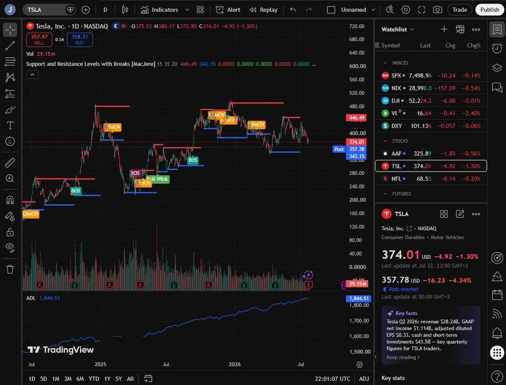
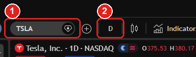
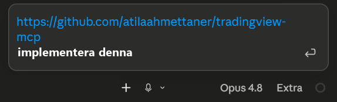

Du kopplar Claude till live marknadsdata en gång. Sen säger du vilken chart du tittar på och frågar på vanlig svenska: trend, RSI, Bollinger, volym, screeners, till och med backtester på färdiga strategier. Claude hämtar siffrorna och räknar på dem åt dig. Gratis och ingen API-nyckel.
Det är där du ser vad symbolen faktiskt heter, till exempel BTCUSDT, och vilken tidsram du tittar på. Det är de två sakerna du sen ger Claude.


Verktyget i nästa steg hämtar marknadsdatan själv, så du behöver inget betalkonto på TradingView för att köra det här.
Det här är verktyget du ska installera. Du behöver inte leta upp det själv, kopiera bara länken här nedanför.
https://github.com/atilaahmettaner/tradingview-mcp
Klistra in länken i Claude och säg åt den att implementera den som en MCP-server. Claude sköter resten. Projektet är skrivet i Python, så datorn behöver Python 3.10 eller senare och uv. Har du dem inte kan du be Claude fixa det först.

Om Claude kör fast, ge den raden nedan. Den är projektets egen rekommenderade rad, och den ska du kopiera exakt.
uv tool run --from git+https://github.com/atilaahmettaner/tradingview-mcp.git tradingview-mcp
Nu frågar du på vanlig svenska. Skriv symbolen och tidsramen från steg 1, så hämtar Claude den chartens data och räknar på den. Till exempel: "Analysera BTCUSDT på fyratimmarsgrafen. Vad säger trenden, RSI, Bollinger och volymen?"
Den klarar också screeners (dagens vinnare och förlorare), jämförelser mellan symboler, och backtester på färdiga strategier som RSI, MACD och Bollinger.
Analysen blir bara så bra som det du matar in. Jag är ingen trader, så det här är där du tar över: berätta hur du tänker, vilka nivåer du bryr dig om, och vilka upplägg du vill att den jämför mot.
Mitt tips är att ge den data från de traders du själv tycker är bäst. Låt Claude läsa hur de resonerar och sätt det mot din egen chart, i stället för att fråga rakt ut vad du ska göra.
Det här är inte finansiell rådgivning, och jag är inte trader. Verktyget hjälper dig att läsa marknadsdata snabbare, det är allt. Besluten och pengarna är dina.
Projektet är inte kopplat till TradingView Inc. Siffrorna i den här guiden (stjärnor, licens, senaste uppdatering) är kontrollerade mot GitHub i juli 2026 och kan ha ändrats sen dess.
Jag hjälper dig komma igång, från första frågan till färdig rutin. Hör av dig så tar vi reda på om och var AI passar för dig eller ditt företag.
Boka ett strategisamtal